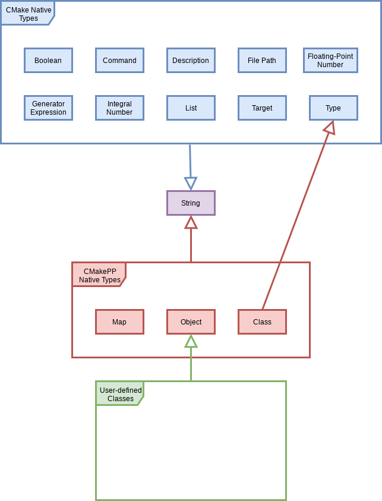

Types
Native CMake is a weakly typed language where all values are strings, and, in
certain circumstances, certain strings are interpreted as being of another type.
A common example is when a string is used as an argument to CMake’s if
statement, where the string is implicitly cast to a boolean. In practice this
weak typing can lead to subtle, hard-to-detect errors. CMakePP implements
strong types in order to avoid/catch such errors.
The following sections describe the types recognized by CMake and the CMakePP language. Subsections describe the individual types in more detail (the type literal associated with the subsection’s type is listed in parentheses after the type’s name).
CMake Types
To my knowledge, CMake does not provide a list of recognized types. CMake does, in some contexts, recognize a string as one of the following types: boolean, command, file path, floating-point number, generator expression, integer, or a target.
Boolean (bool)
Any CMake string which case-insensitively matches one of the established boolean literals is deemed to be a boolean. The recognized boolean literals adopted by CMakePP are a subset of those recognized by CMake itself. The list of CMakePP boolean literals are:
True boolean literals:
ON,YES,TRUE, andYFalse boolean literals:
OFF,NO,FALSE,N,IGNORE,NOTFOUND, and string literals ending in-NOTFOUND
CMake’s documentation additionally lists integer literals as being boolean
literals; however, the CMakePP language adopts the philosophy that 0 and
1 are integer literals.
Command (fxn)
CMake is able to determine if a string is actually the name of an invocable
CMake command. The name is case-insensitive and is considered to define a
command if it is the name of a built-in CMake function (e.g.,
add_subdirectory) or a user-defined macro/function. The type “Command” has
been chosen to avoid confusion with CMake’s native function command. It
should be noted that the CMakePP language uses name-mangling to implement
overloads, so the mangled function name that is a command and not the unmangled
one. For example, if you define a CMakePP function a_fxn, the literal
string "a_fxn" is not recognized as a command (it will be a desc).
Instead, the actual, mangled command is something like "_a_fxn_int_bool_"
(this is just an illustrative example of what the name mangling looks like, the
actual mangled name will be different, and less human-readable than this).
Note
CMake convention is that member functions of a type T are called using a
function named T. This creates an ambiguity; for example, is list a
command or a type? The CMakePP language resolves this ambiguity by deciding
that list is a type and that list(LENGTH is the command. This
interpretation is consistent with Python (and C++) where MyClass.fxn
(MyClass::fxn) is the function belonging to a type MyClass. This
means, in the CMakePP langauge, that type and class take precedence over
function. In practice, the actual member functions have mangled names and
this is only an ambiguity for the syntactic sugar to call them.
File Path (path)
CMake has builtin support for determining whether a string is a valid file path
for a target operating system. While CMake natively has some support for
relative file paths, best CMake practice is to always use absolute file paths.
Therefore, the CMakePP language stipulates that any CMake string that can be
interpreted as an absolute file path is an object of type path. It is
worth noting that the path does NOT need to exist in order for it to be a
file path object. Additionally, elements of the path should be separated by
/ characters regardless of the convention of any particular OS.
Floating-Point Number (float)
CMake strings which contain only a single decimal character (.) in addition
to at least one digit in the range 0-9 are floating point numbers. Floating
point numbers may optionally be prefixed with a single minus sign character
(-) to denote that the value is negative. Since ultimately the
floating-point value is stored as a string, it is of infinite precision.
CMake’s math command does not support arithmetic involving floating point
values, so floating point numbers are uncommon in typical CMake scripts.
Generator Expressions (genexpr)
CMake expressions of the form $<...> are generator expressions.
Integers (int)
Any CMake string comprised entirely of the digits 0-9 is an integer. Integers
may optionally be prefixed with a single minus sign (-). Integers are
ultimately stored as strings and are of infinite precision. That said
CMake’s backend is written in C++ and it is likely that passing integers into
native CMake functions will result in a loss of precision.
List (list)
In CMake, strings which contain at least one un-escaped semicolon are lists. In the CMakePP language, we avoid lists as much as possible owing to the many gotchas associated with them. Nonetheless, particularly at interfaces with standard CMake code, the use of lists is unavoidable. It is worth noting that CMakePP’s definition of a list means that a single-element list will be identified as being of the type of that element. In practice, this poses no problem because we allow any single object to be implicitly cast to a single-element list in order to satisfy a function’s signature.
String (str)
This is the fundamental type that all valid CMake values share. In the CMakePP
langauge, the type str functions like void* in C/C++. If a CMakePP
function accepts an argument of type str that means it accepts any valid
CMake value. It should be noted that str is not the same thing as desc.
In particular all desc are str, but not all str are desc. For
example the str, TRUE is a bool. In the CMakePP language the
intrinsic type of an object will never be str.
Target (target)
CMake keeps an internal list of targets. Any CMake string that CMake recognizes
as the name of a target is of the target type.
Quasi-CMake Types
The types in this section straddle the line between being native to CMake and being part of the CMakePP language extension.
Description (desc)
CMake itself takes the point of view that everything is a string, so str is
the type common to all CMake values. If we want to assert that every valid
value has one, and only one, intrinsic type, we need a type for the subset of
str objects that are not of any other intrinsic type aside from str.
We call this subset descriptions. Description is a catchall for any valid
CMake value which fails to meet the criteria of being another intrinsic type
(not counting str). In practice, descriptions are usually used to name
and/or document things and tend to be human-readable. The name “description”
was chosen to avoid confusion with CMake’s fundamental string type (the use of
which is fairly common throughout CMake). Also of note, descriptions tend to
be the type of an object when there is a syntax error, for example the string
literal " 1" is a description and not an integer because it includes
whitespace.
Type (type)
If you are going to recognize types, you need a way to express them in the code. That is what the abbreviations (e.g., bool, int) we have been introducing are for. The abbreviations are reserved strings that need to have a type associated with them, that’s what the “type” type is for (in actual code the type name “type” is far more natural and less confusing than it comes off here). More generally, a CMake string is of type “type” if it matches (case-insensitively) any of the type abbreviations in this chapter. The list of which is: bool, class desc, float, fxn, genexpr, int, list, map, obj, path, str, target, and type.
CMakePPLang Types
Class (class)
The “Class” type is the type of an object which holds the specification of a
user-defined type (i.e. it’s the type of a class in the object-oriented sense
of the word). This should not be confused with the type of an instance of a
class. For example, if you declared a class MyClass CMakePP would treat
the literal, case-insensitive string "MyClass" as being of
type “Class”. Instances of the MyClass class would be of type MyClass.
The “class” type generalize objects of type “Type” (and the CMakePP language
allows implicit conversion from class to type). The reason for the
distinction between “Class” and “Type” is that CMakePP needs to keep track of
additional meta-data for a “Class” (such as base classes) which is not
associated with a type. In other words, the distinction between a class and a
type is to most users immaterial (and in fact you almost always want to take
instances of type “Type” and just let classes be implicitly converted) so
ignore it if it is confusing you and know that the string “class” is reserved
and can’t be used.
Map (map)
Stealing from Python’s design, it becomes much simpler to implement objects if we have an associative array object. These arrays hold the state of the object instances. For this reason, the CMakePP language supports a map type. The map type is essentially a fundamental, built-in type. You cannot inherit from it, but you can use instances of it in your code. The CMakePP language prefers to use maps instead of lists whenever feasible, as maps can be arbitrarily nested without further consideration and tend to work cleaner than CMake’s native lists (although there is an abstraction penalty).
Object (obj)
This is the base class for all user-defined classes. In practice it works a bit
like str in that it is usually used as the lowest-common denominator for a
function taking any object. The object type is mainly needed for writing
generic routines that operate on instances of user-defined classes and is not
expected to be of interest to most users aside from the fact that it is the
Object class which defines the default implementations for member functions like
equality comparisons.
Other Types
Particularly for documentation purposes, the CMakePP language introduces several other types. These types may only be conceptual or they may have some code support.
Pointers
Pointers are more of a conceptual type in the CMakePP language and typically
show up when we are dealing with lists. In the CMakePP language, a pointer is
a variable which dereferences to a value. In CMake, the ${...} syntax can
be thought of as dereferencing what ever variable is in the brackets. If a
function takes a pointer to, for example, a list, then you do not pass in the
list explicitly, but rather the name of the variable which holds the list. In
code:
function(take_list_by_pointer pointer_to_list)
list(LENGTH "${pointer_to_list}" length_of_list)
message("List length: ${length_of_list}")
endfunction()
set(a_list 1 2 3)
# Meant to be called like:
take_list_by_pointer(a_list) # Prints "List length: 3"
# Not like (this passes the value of the list):
take_list_by_pointer("${a_list}") # Prints "List length: 0"
To document the type of pointer_to_list in the above code we use the syntax
list*, which is stolen from C/C++ and should be read as “pointer to a list”.
At the moment if a function takes an argument of type T* (and it does type
checking) it will only enforce that the provided argument is of type desc
(which it must be in order to be used as a sane variable name).
It should be noted that the official CMake documentation does no differentiate well between the variable holding a list and the list itself. By introducing the concept of a pointer to CMake it becomes easier to make this distinction. In almost all circumstances, native CMake functions take pointers to lists and not the lists themselves.
Tuples
Tuples are purely a documentation convenience for functions with multiple
return values. The standard way to document the return type of a function is
using the :rtype: field which takes the type of the returned value(s) as
an argument. To get multiple returns in a single return, one wraps them in a
tuple. The CMakePP language documentation syntax for this is stolen from
Python. For example, (int, bool) means the function returns two values,
the first value is of type int and the second value is of type bool.
As a slight aside, multiple returns in CMake are done simply by having multiple
arguments to a function be denoted as results.
Summary
The following UML diagram is intended to help summarize the type system of CMakePP.
At the top, in blue, are the types native to CMake. For all intents and purposes they all derive from a single type, String. In the middle, in red, are the types native to the CMakePP language. The native CMakePP types derive from String as well, with “Class” also deriving from “Type”. User-defined classes are symbolized by the green box at the bottom, all of which derive from “Object”, and may have relationships among themselves as well.